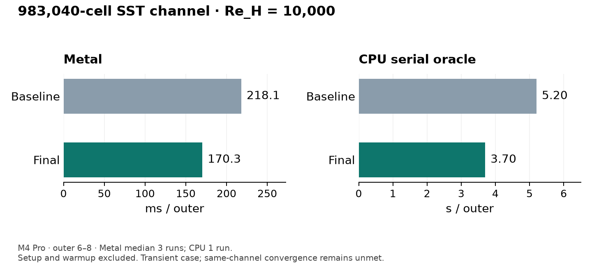

Measured on Apple M4 Pro, 983,040 graded tetrahedra. Same transient window; three Metal runs per version and one CPU run. The generated channel has not reached steady convergence. CUDA performance is a projection only.